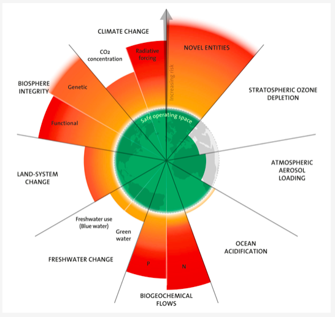
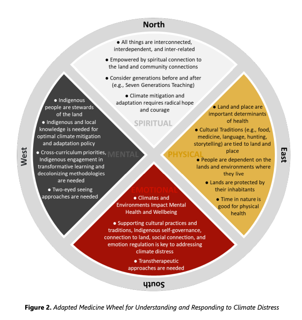

Welcome to Section 1: Introduction to Climate Change and Mental Health!
In this section, you will learn:
- The relationship between climate change and mental health and how environmental changes can influence emotional well-being, psychological distress, resilience, and the overall health and well-being of communities.
- An overview of climate change and its widespread impacts on ecosystems, the environment, human societies, and health.
- Key aspects of planetary health and how it contributes to understanding climate change as an interconnected ecological, health and societal challenge.
- Major frameworks including the biomedical, biopsychosocial, social-ecological, cultural and Indigenous perspectives which relate to health and well-being
- Key examples of Indigenous frameworks and knowledge systems, connections with health and well-being, and some of the many ways Indigenous Peoples are leading stewardship, regeneration, and protection of lands, waters, plants, animals, and climate well-being.
- Understand ways in which climate change distinctly impacts the diverse Indigenous Peoples within Canada and the historical and ongoing colonial impacts that contribute to the disproportionate impacts of climate change for Indigenous communities.
This section includes content relating to mental health, climate change, and injustice. Some learners may find these topics challenging to engage with. This information is available to you to engage with as you choose, including choosing not to engage with particular sections. We encourage you to approach the material in ways that support your well-being.
Please remember to:
- Pace yourself
- Take breaks as necessary
- Practice self-care as you work through the curriculum
Resources are available to support yourself in navigating emotions that may arise during this curriculum. Take some time to reflect on what supports you, consider what resources you could connect with as needed, and review the list of ideas we have compiled here:
- If you are in Canada and need immediate mental health support, you can access a list of available resources here.
- You can also access a list of additional supportive resources compiled by the MHCCA team here.
- If you are feeling overwhelmed or in need of a mental pause, you may find support in this list of grounding and presencing techniques.
Module reviewers & contributors
- Kiffer G. Card, Faculty of Health Sciences, Simon Fraser University
- Kaylie Higgs, Mental Health and Climate Change Alliance
- Dana De Benetti, Mental Health and Climate Change Alliance
- Michael Marchand, sqilxw, syilx Nation - Cultural Safety Consultant
Understanding the relationship between climate change and mental health is crucial for developing effective strategies to support individuals and communities facing environmental challenges. Climate change not only alters our physical surroundings but also profoundly affects our psychological well-being, influencing how we perceive and respond to the changing world around us. This module explores the importance of recognizing and addressing the mental health impacts of climate change, highlighting why this understanding is essential for fostering resilient and thriving communities. It also invites us to consider how meaningful mental health responses must go beyond individual coping to address social, political, and structural conditions influencing climate distress while fostering hope, connection and care for one another and the planet.
Why is the intersection of climate change and mental health important to you? What are you hoping to learn or gain from completing this curriculum?
By exploring the interconnectedness of environmental changes and mental health, you will gain insights into the pervasive effects of climate change on emotional well-being. This knowledge is fundamental for creating informed policies, developing support systems, and encouraging proactive actions that mitigate the psychological toll of a warming planet.
Click each of the cards below to reflect more on some reasons why understanding the relationship between mental health and climate change is important.
Recognize Global Impact: Climate change affects both the environment and mental health, making it a global issue with far-reaching consequences.
Making Connections with Equity and Climate Justice: Understanding these interactions guides meaningful actions that prioritize equity and climate justice, especially for communities most affected.
Address Mental Health Challenges: Understanding the mental health impacts of climate change such as anxiety, depression and post-traumatic stress disorder (PTSD) enables mitigation strategies.
Promote Resilience: Awareness fosters resilience in individuals and communities, enhancing their ability to cope with climate-related stressors.
Combat Powerlessness and Hopelessness: Understanding psychological effects can reduce feelings of helplessness and promote empowerment and action.
Support Policy and Community Initiatives: Knowledge informs policies and programs designed to mitigate climate impacts and protect mental health amid environmental challenges.
Encourage Proactive Action: Learning about these impacts encourages individuals to address climate change and safeguard their mental well-being and that of future generations.
Foster Education and Support Systems: Raising awareness strengthens support networks, promotes mental wellness, and builds connected communities.
Enable Meaningful Contribution: Understanding equips individuals to make tangible differences through advocacy, education, and action.
Making Change within the Circle of Influence: When an individual works within their circle of influence (a concept developed by Stephen Covey referring to areas where a person can influence outcomes through their own actions and responses), there are opportunities to make meaningful change and see results of their efforts.
Why a Mental Health Approach to Climate Change Must Go Beyond the Individual
A systems-focused perspective helps to explain how broader social, political, and environmental systems impact climate-related distress. Climate grief or anxiety reflects structural conditions including fossil fuel dependence, social inequity, and colonial histories, and cannot be “treated away” without addressing their root causes. The following points build on this concept with additional reasons why a mental health approach to climate change must go beyond the individual.
- Communities Hold Solutions: Collective practices such as mutual aid, ecological restoration groups, climate justice organizing, and community-led adaptation may be more adaptable and scalable psychosocial solutions to address mental health consequences of climate change.
- Healing is Relational: Trauma healing involves rebuilding trust, safety, agency, and connection—conditions that are inherently social and political.
- Empowerment Reduces Distress: Participatory, justice-oriented climate action helps transform passive fear into active agency, reducing helplessness and supporting psychological resilience.
- Mental Health Requires Structural Transformation: Policies ensuring climate justice, equitable resource distribution, and community empowerment are themselves mental health interventions.
A mental health response to climate change emphasizes:
- Building collective capacity and solidarity
- Acknowledging shared ecological and social trauma
- Transforming structural conditions of harm
- Fostering active engagement in climate justice movements
Thus, mental health practice must not only help individuals cope with climate impacts but also support them in changing the conditions that cause distress, recognizing that healing and political transformation are interdependent.
Indigenous Perspectives
As you consider why understanding the relationship between climate change and mental health is essential, Indigenous perspectives offer additional insights that deepen this rationale. The emotions that arise in response to ecological loss are not only valid but already familiar to many Indigenous communities that have long witnessed the degradation of lands, waters, and ecosystems central to cultures, identities, and well-being.
These emotions are part of an intergenerational story of resilience shaped by colonization, land dispossession, and cultural disruption. The loss of autonomy and agency to fulfill duties to safeguard and steward the lands can be a specific source of ongoing distress, given that they are understood by many communities as deeply rooted and sacred responsibilities. This connection to land stewardship is reflected in the United Nations Declaration on the Rights of Indigenous Peoples (UNDRIP), an international human rights framework that affirms the rights of Indigenous Peoples. Within the framework, Article 25 states that “Indigenous peoples have the right to maintain and strengthen their distinctive spiritual relationship with their traditionally owned or otherwise occupied and used lands, territories, waters and coastal seas and other resources and to uphold their responsibilities to future generations in this regard.”
Despite centuries of colonial imposition, trauma, and harm, Indigenous Peoples have engaged in resistance and healing work — carrying forward languages, practices, ceremonies, ways of knowing, governance, and kinship systems that continue to sustain cultural and spiritual health. These practices are built upon a foundation of harmonious relationships with family, communities as well the lands and waters and non-human inhabitants. This resilience is not simply about survival. It reflects a commitment to maintaining continuity across generations, even in the face of repeated interference and loss. Cultural continuity, being able to pass on stories, values, and responsibilities, has been shown to protect mental health and strengthen community responses to crises.
Integrating mental health into climate responses means recognizing the strength that comes from these enduring connections. For Indigenous Peoples and communities, healing and adaptation are often grounded in culture, not separated from it. When support systems honour Indigenous knowledge and uphold cultural continuity, they do more than address symptoms of distress. They help repair relationships and uphold the responsibilities that come with being part of a living, interdependent world. This lens can inform more inclusive and compassionate approaches to climate and mental health that value both emotional expression and collective resilience.
Key Takeaways
- Understanding the relationship between climate change and mental health highlights the global impact of environmental changes on psychological well-being.
- Addressing mental health challenges enables the development of strategies to mitigate anxiety, stress, and trauma related to climate change.
- Promoting resilience helps individuals and communities cope with climate-related stressors and maintain mental well-being.
- Climate-related distress is shaped by systemic forces, so meaningful mental health responses must go beyond individual coping and focus on collective healing, justice, and structural transformation.
- For many Indigenous communities, cultural continuity and practices play a central role in bridging climate change and mental health.
Recognizing the intricate connection between climate change and mental health is essential for creating holistic approaches to environmental challenges. By integrating this understanding into policies, support systems, and community initiatives, we can build resilient and thriving societies capable of navigating the psychological impacts of a changing climate. This foundational knowledge empowers you to contribute effectively to the collective effort of fostering mental well-being amidst environmental transformation.
Learning Activities
Objective: You will reflect on the importance of understanding the link between climate change and mental health, exploring how this knowledge informs resilience, empowerment, and actionable solutions.
Instructions:
- List Key Reasons:
- Start by reviewing the module content on why it’s important to understand the connection between climate change and mental health. Write down 3-5 key reasons that resonate with you (e.g., fostering resilience, combating feelings of hopelessness, supporting policy initiatives).
- Personal Reflection:
- For each reason you’ve written down, reflect on why it is significant to you or your community. Answer these guiding questions:
- Why is this reason important?
- Can you think of an example (real or hypothetical) that illustrates this connection?
- How might understanding this reason lead to better mental health outcomes?
- For each reason you’ve written down, reflect on why it is significant to you or your community. Answer these guiding questions:
- Application to Action:
- Think about how this understanding could encourage actionable change. For example:
- How can raising awareness of the climate change-mental health link inspire proactive steps at an individual or community level?
- What role can you play in fostering this awareness?
- Think about how this understanding could encourage actionable change. For example:
- Create a Summary Statement:
- Summarize your thoughts in a paragraph explaining why understanding the relationship between climate change and mental health is important for creating resilient, empowered communities.
Objective: Groups will collaborate to explore the importance of understanding the climate change-mental health relationship and develop an advocacy message to promote awareness and action.
Facilitator Instructions:
Preparation Time: 15 minutes to prepare group instructions and provide materials (e.g., markers and large paper for in-person groups or a shared collaborative tool like Google Jamboard for online sessions).
Time Allocation: 50-60 minutes.
- Set the Stage:
- Introduce the activity by emphasizing that understanding the link between climate change and mental health is not just academic—it’s essential for fostering resilience, informing policy, and empowering communities to act.
- Group Assignment:
- Divide participants into small groups of 4-5. Assign each group a specific theme from the module (e.g., promoting resilience, reducing hopelessness, supporting policy initiatives, or fostering education and support systems).
- Activity Flow:
- Step 1 (10 minutes): Groups discuss their assigned theme, using these guiding questions:
- Why is understanding this theme important for addressing climate change and mental health?
- How does this theme connect to real-world examples (e.g., policies, community initiatives, or personal actions)?
- What barriers might prevent people from understanding or addressing this theme?
- Step 2 (15 minutes): Groups brainstorm how to advocate for awareness of their theme. They can create a message in the form of a slogan, infographic outline, or brief script for a public service announcement (PSA).
- Step 3 (10 minutes): Each group finalizes their advocacy message, ensuring it is clear, compelling, and actionable.
- Step 1 (10 minutes): Groups discuss their assigned theme, using these guiding questions:
- Sharing and Debrief (15 minutes):
- Groups present their advocacy message to the larger group. After each presentation, facilitate a discussion to connect their ideas to broader efforts to address climate change and mental health.
- Use debrief questions such as:
- “What common threads did we see across the groups’ messages?”
- “What new insights or ideas emerged from this activity?”
- “How can we use these messages to promote meaningful action in our communities?”
Variation: If time permits, have groups develop a plan for implementing their advocacy message (e.g., identifying target audiences, platforms, or actions they would take to spread awareness).
References
- Coverdale, J., Balon, R., Beresin, E. V., et al. (2018). Climate Change: A Call to Action for the Psychiatric Profession. Academic Psychiatry, 42(3), 317–323. https://doi.org/10.1007/s40596-018-0885-7
- Covey, S. R. (1989). The 7 habits of highly effective people: Powerful lessons in personal change. Free Press.
- Lawrance, E. L., Thompson, R., Newberry Le Vay, J., et al. (2022). The Impact of Climate Change on Mental Health and Emotional Wellbeing: A Narrative Review. International Review of Psychiatry, 34(5), 443–498. https://doi.org/10.1080/09540261.2022.2128725
- Middleton, J., Cunsolo, A., Jones-Bitton, A., Wright, C. J., & Harper, S. L. (2020). Indigenous mental health in a changing climate: A systematic scoping review of the global literature. Environmental Research Letters, 15, Article 053001. https://doi.org/10.1088/1748-9326/ab68a9
- Power E, McCarthy N, Kelly I, Cannon M, Cotter D. Climate change and mental health: time for action and advocacy. Irish Journal of Psychological Medicine. 2023;40(1):6-8. doi:10.1017/ipm.2021.70
Module reviewers & contributors
- Kiffer G. Card, Faculty of Health Sciences, Simon Fraser University
- Kaylie Higgs, Mental Health and Climate Change Alliance
- Dana De Benetti, Mental Health and Climate Change Alliance
- Monique Beneteau, Canadian Coalition for Seniors’ Mental Health
- Michael Marchand, sqilxw, syilx Nation - Cultural Safety Consultant
- Dora Rebelo, MHPSS Consultant, Iscte- University Institute of Lisbon
- Judy Wu, Faculty of Health Sciences, Simon Fraser University
- Maya K. Gislason, Faculty of Health Sciences, Simon Fraser University
Climate change is undeniably one of the most urgent challenges facing our planet today and it is having profound, interconnected and widespread effects on ecosystems, the environment, human societies, economies, and health. Climate change is defined as long-term alterations in temperature, precipitation, and other atmospheric conditions. These changes can be natural, but since the 1800s have primarily been driven by human activities such as burning fossil fuels which release greenhouse gas (GHG) emissions into the atmosphere. These emissions cause heat from the sun to become trapped and cause warming. This warming then contributes to global changes in weather patterns, sea ice, ocean currents, and other impacts that can have broad ripple effects, some of which are explored more below.
Exploring the multifaceted impacts of climate change is important for understanding how it affects individuals, communities, and nations alike. It is also an important step in making connections to the impacts on our physical, mental, and emotional health and well-being.
The content below outlines a range of climate change impacts across social and ecological systems, including health and well-being. You are invited to explore the material at your own pace and in a way that feels manageable for you.
Click each of the cards below to learn more about the impacts of climate change.
Rising Sea Levels: Melting glaciers and sea ice cause sea levels to rise, contributing to flooding, erosion, and displacement that threaten communities and infrastructure.
Increased Frequency and Severity of Extreme Weather Events: More intense and frequent hurricanes (class 5+), heatwaves, wildfires, and floods cause economic damage and loss of life.
Ocean Warming and Acidification: Rising temperatures and carbon dioxide absorption warm oceans and lower pH, threatening marine species (e.g., shellfish failing to form shells) and jeopardizing fisheries and coastal food security.
Loss of Biodiversity and Ecosystem Disruption: Species extinction and population declines disrupt ecosystems, while climate-driven shifts in migration, breeding, and habitats further destabilize ecological balance.
Forest Degradation: Wildfires and droughts damage forests, air quality, and biodiversity. Forest fires release carbon stored in trees and other vegetation, further contributing to climate change.
Food and Water Insecurity: Changing climate conditions reduce the availability and reliability of essential resources. Agricultural yields decline, affecting overall food availability, including traditional food sources of Indigenous Peoples, alongside worsening water scarcity.
Economic Disruption: Extreme events and climate-related disasters can strain economies, reduce productivity, and increase costs.
Deepening of Injustices: Amplification of structural disparities and economic inequities disproportionately impacts communities such as the Global South and Indigenous Peoples.
Human Health Risks: Climate change affects multiple health systems—respiratory, cardiovascular, mental health, and more—through heat, extreme weather, pollution, and other environmental stressors.
Vector-borne Diseases: Shifts in climate can cause illnesses such as Lyme disease, West Nile virus, malaria, and dengue spread to new regions.
Displacement and Migration: Climate-related disasters, extreme weather and rising sea levels force relocation, creating climate refugees.
National Security Threats: Resource scarcity and displacement contribute to conflicts.
Infrastructure Damage: Roads, bridges, and utilities and other infrastructure are impacted by extreme weather such as floods, storms, and extreme heat.
Erosion of Social Systems and Community: Community systems, relationships, and connections are strained which can lead to breakdown of social systems.
Reflect on the interconnected climate impacts explored in the flip cards. Which of these climate impacts resonate most with you and why? How might a change in one area influence or cause ripple effects in others?
Learn More
If you are interested in the topic of climate change and would like to learn more, here are some other resources to explore:
- Metro Vancouver offers a self-directed free learning program on Climate Literacy which explores climate solutions in the context of Vancouver, British Columbia.
- The Pacific Institute for Climate Solutions (PICS) at the University of Victoria offers the PICS Climate Insights Course which is a short, self-paced course focused on climate change and pathways for climate action.
Planetary Health
There are many fields and disciplines working together to better understand and respond to climate change, ranging from earth sciences like climatology, natural sciences like ecology, as well as social and behavioural sciences like psychology.
Planetary health is a framework that bridges many disciplines together; it is both a hopeful emerging field and social movement that emphasizes the relationship between human well-being and the environment. Since the mid-2010s, planetary health has grown as a field and movement. However, it is important to understand that it builds upon understandings of the connections between human and ecological health that communities, particularly Indigenous communities, have shared for centuries.
The aim of planetary health is to assess and respond to the way that human activity is influencing Earth systems, human health, and all living things. When natural systems are compromised, it harms ecosystems and influences the building blocks of human health, including clean air, safe water, healthy food, and stable living conditions. Planetary health seeks to protect health by ensuring that the Earth system remains within a safe operating space for life on Earth.
Understanding planetary health helps us see how environmental changes directly affect physical, mental, and emotional well-being. It also frames a holistic view of climate change as not only an environmental issue, but a broader societal and public health challenge.
The planetary boundaries framework is a related framework that can act as a global health check by dividing the Earth system into nine critical boundaries that need to be maintained in order to ensure our planet remains a stable and safe home for humanity.
- Climate change
- Changes in biosphere integrity (biodiversity loss and species extinction)
- Stratospheric ozone depletion
- Ocean acidification
- Biogeochemical flows (phosphorus and nitrogen cycles)
- Land-system change (for example deforestation)
- Freshwater use
- Atmospheric aerosol loading (microscopic particles in the atmosphere that affect climate and living organisms)
- Introduction of novel entities

Several of these boundaries are currently being exceeded as presented in the visual above, highlighting the urgent need for collective action to bring human activities back within the safe zone. If you are interested in learning more about planetary boundaries and what they mean, you can check out the Stockholm Resilience Centre page.
In this module, you have learned more about climate change and how it is a global issue. Fortunately, there are people and institutions around the world that are deeply committed to solutions and change. Here are a few examples to explore which relate to planetary health.
- On a global scale, there is the Planetary Health Alliance, which is a growing collaboration of hundreds of academic institutions, non-governmental organizations (NGOs), research institutes, and government bodies from over 80 countries who are dedicated to addressing the impacts of global environmental change on human health and well-being.
- In Canada, there are also efforts being made to apply a Planetary Health approach to policy and practice at a local level. For example, Sustainability and Preparedness: Our Planetary Health Strategy by Fraser Health in British Columbia is a five year plan (2023-2028) that outlines strategic priorities and actions aligned with a Planetary Health model.
- In an Indigenous context, The determinants of planetary health: an Indigenous consensus perspective, by Redvers and colleagues outlines ten distinct determinants of Indigenous Planetary Health across three related levels: Mother Earth level, Interconnecting level and Indigenous Peoples’ level, emphasizing relational and land-based approaches to the health and well-being of people and the environment.
Indigenous Perspectives
As you learn about the far-reaching environmental and health impacts of climate change, Indigenous ways of knowing offer other ways to understand what is unfolding: a breakdown in relationships. From many Indigenous perspectives, climate change is not only a scientific or ecological crisis, but also a reflection of disrupted relationships between humans and in turn their relationships with the land and non-human relations.
For instance, in their Climate Change Strategy, Métis National Council directly attributes the climate crisis to a relationship to the Earth which is broken, representing a profound imbalance in our responsibilities to the natural world. Similarly, Terry Teegee, Regional Chief of the British Columbia Assembly of First Nations, describes climate change as “world out of balance”. In the context of forestry for example, he explains how Indigenous cultural burning practices have historically served as a way to maintain and regenerate healthy forests, but that restrictions on these practices have resulted in more forest fires and ecological harm.
Where Western frameworks may focus on emissions and temperatures, Indigenous teachings often speak to the spiritual, ethical, and relational consequences of living out of harmony with Creation. The call to address climate change, from this view, is also a call to renew our relationships with land, with each other, and with future generations. This relational lens helps expand your understanding of climate health as inseparable from social and emotional well-being.
Watch
Watch the video World out of Balance | Climate Atlas of Canada (4:00 minutes) where Terry Teegee explores what it means to have a world out of balance.
Key Takeaways
- Climate change involves long-term shifts in temperature and precipitation and other atmospheric conditions, which are now largely driven by human activities.
- It has widespread impacts on the environment, ecosystems, and human health.
- Planetary health provides a framework for understanding climate change as a broader human and ecological health issue, emphasizing the interdependence between environmental systems and human well-being.
- From the lens of Indigenous knowledge systems, climate change represents the breakdown of relationships between humans and the land, and the cultivation of a relational approach to climate action represents a key mechanism through which to address climate change.
Understanding these impacts is crucial for developing effective strategies to mitigate climate change and support mental health resilience in affected communities. Climate change poses significant challenges that extend beyond environmental degradation, deeply affecting mental health and societal well-being. By comprehensively understanding its impacts, we can better prepare to address both the physical and emotional impacts of climate change in our lives as well as develop strategies for fostering more resilient and equitable communities.
Learning Activities
Objective: You will explore how climate change affects different aspects of a community's well-being, focusing on specific sectors and using a structured approach to guide your thinking.
Instructions:
- Create your own table with the following sectors:
- Environment (e.g., species extinction, biodiversity loss, flooding, air quality)
- Economy (e.g., economic losses from disasters, job displacement, costs of adaptation)
- Health (e.g., heat-related illnesses, vector-borne diseases, mental health impacts)
- Social and Cultural Aspects (e.g., displacement, cultural heritage loss, loss of traditional foods, climate migration)
- Infrastructure (e.g., damage to roads, housing, utilities).
- For each sector, answer these questions:
- What is one way climate change impacts this sector?
- Who in the community is most affected? (e.g., children, elderly, farmers, urban poor)
- What are short-term effects (e.g., immediate damage, health risks)?
- What are long-term effects (e.g., loss of jobs, reduced biodiversity, cultural changes)?
- What are some potential responses or solutions?
- Be as specific as possible with your examples.
- For instance, instead of saying “flooding affects communities,” you might note, “Rising sea levels in low-lying areas like Richmond could cause frequent flooding, forcing residents to relocate and straining local government resources.”
- Once you’ve completed all sectors, take a moment to reflect:
- Which sector do you think is the most critical to address immediately? Why?
- How do these impacts connect to one another?
Objective: Groups will collaboratively identify and analyze the multifaceted ways climate change affects communities, using structured prompts for discussion and synthesis.
Facilitator Instructions:
Preparation Time: 20 minutes to prepare prompts and materials.
Time Allocation: 50 minutes (10 minutes per discussion round, plus debrief).
- Set Up: Prepare an Impact Matrix for each group. Use a physical version (poster paper) or a digital collaboration tool (Google Sheets). Include these columns:
- Sector
- Impact
- Example
- Populations Affected
- Short-Term Effects
- Long-Term Effects
- Possible Solutions
- Group Assignment: Divide participants into small groups of 3-5. Assign each group a specific community type (e.g., coastal city, farming town, urban center). Ensure groups have access to relevant materials or examples for context.
- Activity Flow:
- Groups spend 10 minutes discussing each sector (Environment, Economy, Health, Social/Cultural, Infrastructure), completing the corresponding rows in their matrix.
- Encourage groups to think critically about who is most affected, using guiding questions like:
- “Who is most impacted?”
- “How does this impact connect to other sectors?”
- “What are feasible solutions that could be implemented at the community level?”
- Sharing Insights: Once the matrix is complete, have each group share their most surprising or impactful finding.
- Debrief: Facilitate a whole-group discussion to identify patterns and major takeaways. Encourage students to consider:
- Are some sectors more interlinked than others?
- What are the most urgent challenges communities face?
Variation: Add a role-playing element where participants take on roles like a farmer, public health official, or mayor to simulate different perspectives during group discussions
References
- Abbass, K., Qasim, M. Z., Song, H., et al. (2022). A review of the global climate change impacts, adaptation, and sustainable mitigation measures. Environmental Science and Pollution Research, 29, 42539–42559. https://doi.org/10.1007/s11356-022-19718-6
- Climate Atlas of Canada. (n.d.) Indigenous Knowledges and Climate Change. Prairie Climate Centre. https://climateatlas.ca/indigenous-knowledges-and-climate-change
- Health Canada. (2024, June 10). Risks to health from climate change. Government of Canada. https://www.canada.ca/en/health-canada/services/climate-change-health/risks-to-health.html
- Métis National Council. (2025). Métis Nation Climate Change Strategy [PDF]. Métis National Council. https://www.metisnation.ca/wp-content/uploads/2025/09/MNC-Metis-Nation-Climate-Change-Strategy-FNL-PDF.pdf
- Planetary Health Alliance. (n.d.). What is Planetary Health? https://planetaryhealthalliance.org/what-is-planetary-health/
- Rocque, R. J., Beaudoin, C., Ndjaboue, R., Cameron, L., Poirier-Bergeron, L., Poulin-Rheault, R. A., Fallon, C., Tricco, A. C., and Witteman, H. O. (2021). Health effects of climate change: an overview of systematic reviews. BMJ Open, 11(6), e046333. https://bmjopen.bmj.com/content/11/6/e046333
- Stockholm Resilience Centre. (n.d.). Planetary boundaries. Stockholm Resilience Centre. https://www.stockholmresilience.org/research/planetary-boundaries.html
- United Nations. (n.d.). What is climate change? United Nations. https://www.un.org/en/climatechange/what-is-climate-change
- Whitmee, S., Haines, A., Beyrer, C., Boltz, F., Capon, A. G., de Souza Dias, B. F., Ezeh, A., Frumkin, H., Gong, P., Head, P., Horton, R., Mace, G. M., Marten, R., Myers, S. S., Nishtar, S., Osofsky, S. A., Pattanayak, S. K., Pongsiri, M. J., Romanelli, C., Soucat, A., Vega, J., & Yach, D. (2015). Safeguarding human health in the Anthropocene epoch: Report of the Rockefeller Foundation–Lancet Commission on planetary health. The Lancet, 386(10007), 1973–2028. https://doi.org/10.1016/S0140-6736(15)60901-1
Module reviewers & contributors
- Kiffer G. Card, Faculty of Health Sciences, Simon Fraser University
- Kaylie Higgs, Mental Health and Climate Change Alliance
- Dana De Benetti, Mental Health and Climate Change Alliance
- Brianna Aspinall Nuñez, Carbon Conversations TO
- Lilian Barraclough, College of Social and Applied Human Sciences, University of Guelph & Youth Climate Lab
- Michael Marchand, sqilxw, syilx Nation - Cultural Safety Consultant
- Kelly Green Guilbeau, conservation social scientist, Johns Hopkins University Bloomberg School of Public Health
- Judy Wu, Faculty of Health Sciences, Simon Fraser University
- Ashley Stoltz, Faculty of Health Sciences, Simon Fraser University
- Maya K. Gislason, Faculty of Health Sciences, Simon Fraser University
- Steve Willis Herculean Climate Solutions
Climate change profoundly impacts people around the world on physical, mental, emotional, social, cultural, and spiritual levels. Individuals are experiencing heightened levels of anxiety, depression, and stress due to factors such as extreme weather events, loss of livelihoods, and displacement. Feelings like uncertainty and fear about the future are contributing to widespread mental health challenges that are affecting people in most communities This module explores the major psychological effects of climate change, providing a foundation for understanding how environmental changes influence mental well-being.
Below is a list of some examples and possible ways in which climate change can cause disruptions to mental health and well-being. These emotions and responses will be explored in depth in later modules. Before engaging with this content, we invite you to approach it in a way that feels manageable and supportive for you.
- This information is available to you to engage with as you choose. You are welcome to pause, step back, take breaks, or return to sections as needed.
- This list is shared with the intention to learn and reflect on possible experiences that can arise. These events are not necessarily occurring now and may not impact you or your loved ones in the future.
- Understanding these connections, and what could happen can support awareness, preparedness, and resilience.
- Resources are available here to support yourself in navigating emotions that may come up.
Increased Anxiety, Depression, and Stress
• Extreme Weather Events: Disasters like floods, hurricanes, and wildfires can lead to stress, trauma, and long-term mental health conditions.
• Chronic Stress from Environmental Change: Ongoing environmental degradation can create persistent stress, contributing to anxiety and depression.
• Loss of Stability: Economic uncertainty and the unpredictability of climate change can heighten feelings of insecurity and hopelessness.
• Grief for Lost Species and Ecosystems: Shifts in ecosystems over time (e.g., coral dieoffs, ecosystem transformation, species extinction) can result in a lost connection to places and experiences which no longer exist. These losses can be particularly distressing for Indigenous Peoples when species like salmon are impacted, which provide not only subsistence but are also have cultural, social, and spiritual significance
Fear and Uncertainty About the Future
• Anticipatory Anxiety: Worry about worsening climate impacts can contribute to prolonged psychological distress.
• Climate Anxiety: Heightened emotional distress, worry, and uncertainty can emerge in relation to climate change and its actual or anticipated effects.
• Impact on Younger Generations: Youth are increasingly affected by existential dread about their future and perceived burden to solve the climate crisis, contributing to intergenerational mental health challenges.
Displacement and Loss
• Forced Relocation: Rising sea levels, desertification (degradation of fertile land into desert), wildfires, and extreme weather events can displace individuals and families, resulting in grief and trauma.
• Cultural Loss: Displacement often leads to loss of cultural identity, heritage, and community, intensifying emotional distress.
• Separation from Support Networks: Migration disrupts social connections, contributing to isolation, loneliness, and mental health impacts.
Livelihood Disruption
• Agricultural Instability: Droughts, floods, and changing weather patterns jeopardize agricultural livelihoods, increasing stress and economic hardship.
• Job Loss in Climate-Sensitive and Resource-Dependent Industries: Industries such as fishing, forestry, and tourism are affected by environmental shifts, leading to job loss and related mental health impacts. Similarly, as society shifts toward cleaner energy, sectors such as oil, gas, and mining may see workforce reductions. While this transition benefits the environment and public health, it can create economic uncertainty and stress for affected workers and communities.
• Economic Insecurity: Financial stress from reduced income or job loss exacerbates anxiety, depression, and family strain.
Exposure to Physiological Stress from Shifting Environmental Conditions
• Heat-Related Stress: Extreme heat exposure can lead to heat exhaustion and heat stroke, psychological distress, and impairment. It can also cause some medications to be less effective in persistent high-heat periods and often results in more emergency room visits and community interventions needed.
• Air Pollution: Poor air quality exacerbated by wildfires, shifting weather patterns, or industrial pollution can cause or worsen respiratory or cardiovascular conditions, impair cognitive function, and contribute to mood disorders.
• Water and Food Scarcity: Resource shortages can emerge due to climate change and can drive physiological stress, contributing to poor mental health outcomes, malnutrition, and fatigue.
Social and Community Disruption
• Weakened Social Bonds: Communities affected by repeated climate events can experience a breakdown in social cohesion, reducing access to collective support.
• Increased Conflict Over Resources: Competition for water, food, and habitable land can lead to social tensions and psychological stress.
• Erosion of Trust: Mistrust in government responses or systemic failures in addressing climate change fosters resentment and psychological strain.
Population Impacts
• Children and Adolescents: Young people are particularly susceptible to emotional stress from climate change. Young people may also experience changes in cognitive and emotional development due to climate change.
• Older Adults: Older individuals may be especially vulnerable to health risks from extreme temperatures and displacement, which may compound existing mental and cognitive health issues.
• Communities Facing Social or Systemic Marginalization: Indigenous populations, low-income groups, 2SLGBTQIA+, racialized communities, and other systemically under-resourced and marginalized groups are disproportionately affected by climate change, exacerbating pre-existing inequities.
• Gender Related Impacts: Gender can be an important factor in shaping how climate-related mental health is experienced. These experiences often intersect with other factors, inequities, gender roles, and ripple effects of climate change, such as increased rates of gender-based violence during climate-related events.
Emotional Toll of Repeated Disasters
• Cumulative Trauma: Repeated exposure to climate-related disasters and environmental changes can have a compounding effect, increasing vulnerability to mental health conditions. Additionally, these experiences can further compound on existing impacts, traumas, and inequities.
• Vicarious Trauma: Indirect exposure to climate-related disasters and impacts through media or the experiences of others within one’s social circles or community can also cause distress and impact well-being.
• Burnout and Emotional Exhaustion: Communities in high-risk areas experience chronic fatigue from repeated rebuilding efforts and constant vigilance.
• Loss of Hope: Perceived inability to reverse environmental degradation fosters despair and reduced motivation for future planning.
One powerful way to convey the human impacts of climate change is through storytelling. Here are a few examples of projects and platforms to explore:
- The Climate Disaster Project features a Stories Archive from diverse populations across Canada and in the Philippines that have experienced climate disasters like tropical storms, extreme heat, fires, coastal erosion and severe flooding.
- Voices from Across British Columbia’s Interior: A Stories of Resilience Initiative includes narratives and accompanying paintings to represent the stories of eight individuals and their experiences with a string of devastating wildfires in British Columbia in 2017.
- Eco-Anxious Stories has a collection of climate stories, interviews, videos and podcasts relating to climate and climate emotions.
- EcoLens is a BC Center for Disease Control project and platform for people living in British Columbia to share personal stories about climate change through photos, stories and other creative ways.
- The Indigenous Climate Monitoring Toolkit includes a collection of stories highlighting projects of Indigenous led climate action and monitoring across Canada.
- StoryCorps includes ten interview stories of people’s experiences with climate change in the United States and Puerto Rico and the ways in which it is having diverse impacts on health.
The varied psychological impacts of climate change, and their causes, can be further compounded by the harms that these psychological impacts themselves cause.
Below is an overview of some of the potential consequences of climate distress.
When climate-related anxiety and stress become chronic, they can disrupt numerous bodily systems and worsen or exacerbate pre-existing health conditions. Heightened activity of autonomic nervous system responses (e.g., fight and flight) and prolonged cortisol (stress hormone) release contribute to:
- Cardiovascular Strain: Persistent stress elevates blood pressure and heart rate, increasing the risk of hypertension and heart disease.
- Immune Dysfunction: Chronic stress can weaken the immune response, leaving individuals more vulnerable to infections and inflammation.
- Sleep Disruption and Fatigue: Ongoing anxiety often interferes with normal sleep patterns, exacerbating exhaustion and mental health issues
For children and adolescents, chronic stress related to climate threats can impair emotional and cognitive development. For adults chronic climate stress can impact sleep and concentration affecting judgement and overall ability to adapt and acquire new knowledge and skills. Concern for their own children can also have compounding impacts as well.
- Reduced Academic Performance: Persistent worry about environmental risks can impact sleep and diminish concentration, motivation, and engagement in the classroom and when studying.
- Developmental Delays: Chronic anxiety during formative years may affect emotional development, social skills, self-esteem, and overall mental resilience.
- School Disruptions: Extreme weather events and climate-related disasters can close schools or lead to displacement, interrupting educational continuity.
Mental health challenges tied to climate change have implications for both individual workers and broader economic systems:
- Decreased Productivity: Chronic worry and trauma may reduce focus, morale, and job performance, especially in climate-vulnerable industries (e.g., agriculture, fisheries, tourism).
- Increased Absenteeism: Frequent mental health challenges can lead to missed workdays and even job loss, creating financial strains for both employees and employers.
- Shifting Job Markets: Workers may leave environmentally unstable sectors such as agriculture for potentially more resilient industries, causing labor shortages and economic imbalances in critical areas.
Climate-induced mental health stressors can erode social cohesion and strain interpersonal relationships:
- Family Tension and Conflict: Anxiety can spread among family members, heightening emotional distress and sometimes fueling conflict (e.g., over resource use or coping strategies).
- Reduced Community Engagement: Persistent fear about ecological decline can sap the energy needed for civic participation, weakening local networks and social supports.
- Increased Violence and Abuse: Elevated stress levels have been linked to higher rates of interpersonal conflict, including intimate partner violence, particularly during and after extreme weather events.
As the prevalence of climate-related mental health conditions grows, so does the burden on public health systems:
- Rising Demand for Services: More people may seek therapy, crisis intervention, emergency medical care, and long-term counseling during and after climate-related disasters, potentially overwhelming local resources.
- Healthcare Worker Burnout: Medical professionals and mental health providers are also affected by climate anxiety, which can exacerbate stress and burnout in an already taxed workforce.
- Need for Integrated Approaches: Addressing physical and mental well-being in tandem (e.g., via trauma-informed care, community-based support) becomes essential for effective disaster response and prevention.
The influence that climate change has on political systems and governance has a ripple effect on the mental health and well-being of communities:
- Uneven Capacity to Adapt: Communities with fewer economic, infrastructure, or social resources can face greater barriers to preparing for and recovering from climate impacts, increasing stress and worsening existing inequities.
- Resource Management and Social Stability: Strain on essential resources such as water, food, housing, and energy can exacerbate social tensions, disrupt community connection, and intensify feelings of insecurity.
- Governance and Public Trust: When climate responses are seen as inadequate, inequitable, or inconsistent, public trust in institutions may be impacted, contributing to uncertainty, frustration, and collective distress.
Climate Emotions and the “Polycrisis”
We are living in an era where multiple crises—economic inequality, social and political unrest, global health challenges, and climate change—overlap and intensify one another. This convergence of crises is often referred to as a polycrisis: a dynamic in which seemingly separate threats interact in ways that deepen vulnerabilities and amplify the overall impact. When communities are already grappling with pressures like systemic injustice or fragile health systems, the added stress of climate-related disasters can push them from crisis management into crisis overload.
Climate change acts as a powerful risk multiplier within this polycrisis landscape. In other words, it amplifies existing risks and accelerates new ones. Extreme weather events like wildfires, atmospheric rivers, flooding, droughts, heatwaves, hurricanes, and more disproportionately affect communities that are already on the edge—economically or socially—leading to greater displacement, resource insecurity, and psychological strain. Such compounding pressures can make it much harder for people to cope emotionally, and anxiety, despair, and a sense of powerlessness may set in or intensify when one crisis arrives on the heels of another.
These emotional responses are not happening in a vacuum; they are deeply intertwined with global interlocking challenges. While climate distress, grief, and eco-anxiety can originate with environmental concerns, these emotions are inevitably influenced by broader social, economic, and political realities. Understanding the polycrisis context is therefore essential to grasp why climate emotions can be so intense—and why effective mental health responses must address these interrelated factors, recognizing climate change and climate distress as a systemic and societal issue rather than focusing on individual impacts in isolation.
Indigenous Perspectives
As you explore the psychological effects of climate change, it is important to recognize that for many Indigenous Peoples, climate-related trauma is intertwined with colonial histories and ongoing displacement, cultural loss, and environmental harm. The grief and anxiety caused by climate change does not exist in isolation but is layered upon centuries of dispossession and disconnection from lands, language, cultural expression and traditional ways of life. This compounding of trauma adds weight to the emotional and spiritual toll of witnessing the continued degradation of ecosystems that are not just resources but relatives, ancestors, sources of identity, food, healing, medicine and cultural continuity.
In many Indigenous worldviews, health is not compartmentalized. Mental, physical, emotional, and spiritual well-being are interconnected and inseparable from the health of lands and waters. When species disappear, when forests are lost, when waters are no longer drinkable, the impacts reverberate through communities and across generations. These losses affect not only survival, but also sense of self, belonging, and meaning.
The disappearance of a salmon run, a sacred tree, or a traditional territory is not just an environmental loss; it is a cultural, community, and psychic wound. For example, in the case of the Swinomish Indian Tribal Community, a community of Coast Salish peoples in Washington, United States, salmon is central to culture and identity and has served as a traditional food source for centuries. Salmon are now being threatened by warming waters and shifts in habitats due to climate change. As described by Larry Campbell, a tribal Elder from Swinomish in Protecting Indigenous Culture From Climate Change | RWJF (4:41 minutes), salmon are seen as “feeding the spirit” and he emphasizes the interconnectedness of ecological health and culture in stating “Salmon is culture. Culture is salmon”.
Understanding these intersecting layers of climate distress invites a more relational and justice-oriented approach to mental health. For Indigenous communities, healing from climate trauma often involves enacting sovereignty and restoring connection with land, culture, language, and ceremony. This highlights that mental health responses must be holistic and historically aware, grounded in the recognition that what is happening to the planet is deeply bound to what has happened, and continues to happen, to Indigenous Peoples within contexts of settler colonialism. Addressing climate-related mental health means not only building individual resilience, but also restoring the conditions for cultural and ecological revitalization, health and healing.
Key Takeaways
- Climate change significantly impacts mental health, increasing anxiety, depression, and stress levels.
- Extreme weather events can lead to trauma and long-term mental health conditions.
- Chronic environmental changes contribute to persistent stress and feelings of helplessness.
- For many Indigenous communities, climate-related trauma is closely tied with colonial histories of displacement, cultural loss, and environmental harm.
Understanding these psychological effects is essential for developing comprehensive mental health strategies that address both the immediate and long-term impacts of climate change. By recognizing the diverse ways in which climate change affects mental health, professionals can better support individuals and communities in building resilience and maintaining emotional well-being amidst environmental challenges.Climate change presents significant mental health challenges that require a nuanced and compassionate response. By comprehensively understanding its impacts, we can better equip ourselves to support those affected and foster resilient, thriving communities in the face of a changing climate.
Learning Activities
Objective: You will explore how climate change impacts mental health and reflect on solutions to support individuals and communities.
Instructions:
- Create Your Reflection Outline: On a blank page, create sections for the following psychological effects of climate change:
- Increased anxiety, depression, and stress (including climate anxiety, cumulative and vicarious trauma)
- Displacement and loss (including cultural loss and disruption of support networks)
- Livelihood disruption (economic instability, job loss, resource insecurity)
- Physiological stress from shifting environmental conditions (e.g., heat, air pollution, water/food scarcity)
- Social and community disruption (e.g., weakened social cohesion, conflict over resources, erosion of trust in governance)
- For Each Section, Answer These Questions:
- What is one example of how this psychological effect manifests? (e.g., anxiety from repeated climate-related disasters; grief over loss of traditional lands or species)
- Who in the community is most affected? (Include children, youth, older adults, Indigenous Peoples, low-income or structurally marginalized populations, and other vulnerable groups)
- What are some short-term impacts? (e.g., immediate trauma, fear, uncertainty, exhaustion)
- What are some long-term consequences? (e.g., chronic mental health issues, intergenerational trauma, loss of cultural or ecological knowledge, systemic stress)
- What strategies or actions could help address this impact? (Include personal coping strategies, community programs, culturally grounded approaches, policy-level interventions, and systemic solutions)
- Reflect on Personal and Broader Perspectives:
- Reflect on how climate change impacts your own mental well-being. Are there specific aspects that resonate with your personal experiences or concerns?
- Consider how these psychological effects might look different in urban, rural, or marginalized communities.
- Optional Extensions:
- Write a short paragraph proposing one specific mental health support initiative you think your community or local government should prioritize.
- Look for a story of resilience that connects to the psychological effects of climate change, and reflect on what strategies or support systems helped the individuals or community navigate or recover in this situation.
Objective: Groups will collaboratively analyze the psychological effects of climate change and brainstorm strategies to support mental health in communities.
Facilitator Instructions:
Preparation Time: 15-20 minutes for materials and group instructions.
Time Allocation: 50-60 minutes.
- Set Up: Provide each group with a blank workspace (physical or digital) divided into four columns:
- Column 1: Psychological effect (e.g., anxiety, stress, trauma, climate-anxiety, etc.).
- Column 2: Examples of impacts (e.g., trauma from hurricanes, existential dread among youth).
- Column 3: Affected populations (e.g., children, displaced families, communities facing structural or systemic inequities).
- Column 4: Potential responses or solutions (e.g., government-funded mental health services, peer support groups).
- Group Assignment: Divide participants into small groups of 3-5. Assign each group a specific psychological effect or case study, such as:
- Climate-anxiety among youth
- Mental health impacts of forced displacement
- Chronic stress from resource insecurity
- Activity Flow:
- Step 1 (10 minutes): Groups identify the primary psychological effect they are focusing on and discuss specific examples. Encourage them to explore who is most affected and why.
- Step 2 (15 minutes): Groups brainstorm and record possible strategies to address these mental health challenges, considering both immediate and long-term solutions.
- Step 3 (10 minutes): Groups synthesize their findings into a brief summary or a visual concept (e.g., a list or mind map).
- Sharing and Debrief (15 minutes):
- Each group presents their findings to the larger group, focusing on key takeaways.
- Facilitate a discussion to explore patterns and differences across groups. Use questions like:
- “Which psychological effects seem most urgent to address?”
- “Are there solutions that could address multiple challenges?”
- “How can communities collaborate to build resilience?”
Variation: Add role-playing elements where group members take on stakeholder roles, such as mental health professionals, community leaders, or youth advocates, to bring diverse perspectives into the brainstorming process.
References
- Cianconi, P., Betrò, S., & Janiri, L. (2020). The Impact of Climate Change on Mental Health: A Systematic Descriptive Review. Frontiers in psychiatry, 11, 74. https://doi.org/10.3389/fpsyt.2020.00074
- Datta, R. (2025). Decolonial perspectives on climate change: Learning from the Kainai First Nation in Canada.Environmental Education Research. Advance online publication. https://doi.org/10.1177/26349825251323144
- Galway, L. P., Esquega, E., & Jones-Casey, K. (2022). “Land is everything, land is us”: Exploring the connections between climate change, land, and health in Fort William First Nation. Social Science & Medicine, 294, 114700. https://doi.org/10.1016/j.socscimed.2022.114700
- Hayes, K., Blashki, G., Wiseman, J. et al. Climate change and mental health: risks, impacts and priority actions. Int J Ment Health Syst 12, 28 (2018). https://doi.org/10.1186/s13033-018-0210-6
- Middleton, J., Cunsolo, A., Jones-Bitton, A., Wright, C. J., & Harper, S. L. (2020). Indigenous mental health in a changing climate: A systematic scoping review of the global literature. Environmental Research Letters, 15, Article 053001. https://doi.org/10.1088/1748-9326/ab68a9
- Robert Wood Johnson Foundation. (n.d.). StoryCorps: People share how climate change is harming health. Robert Wood Johnson Foundation. https://www.rwjf.org/en/grants/grantee-stories/storycorps--people-share-how-climate-change-is-harming-health.html
Module reviewers & contributors
- Kiffer G. Card, Faculty of Health Sciences, Simon Fraser University
- Kaylie Higgs, Mental Health and Climate Change Alliance
- Dana De Benetti, Mental Health and Climate Change Alliance
- Lilian Barraclough, College of Social and Applied Human Sciences, University of Guelph & Youth Climate Lab
- Michael Marchand, sqilxw, syilx Nation - Cultural Safety Consultant
- Monique Beneteau, Canadian Coalition for Seniors’ Mental Health
- Dora Rebelo, MHPSS Consultant, Iscte-University Institute of Lisbon
- Kelly Green Guilbeau, conservation social scientist, Johns Hopkins University Bloomberg School of Public Health
- Judy Wu, Faculty of Health Sciences, Simon Fraser University
- Maya K. Gislason, Faculty of Health Sciences, Simon Fraser University
- Susan Clayton, Psychology Department, The College of Wooster
Across the world, there are over 5,000 groups of Indigenous Peoples spanning many languages, territories, and cultures. Through the remaining territories under their stewardship and control, Indigenous Peoples safeguard 80% of the world’s remaining biodiversity and sustain worldviews that weave ecological, spiritual, social, and mental well-being into one continuum. Many Indigenous Peoples and communities maintain strong relationships with place, culture, and the land. These relationships are guided by deep care, reciprocity and respect for plants, animals, waters and the natural world. Climate change is having a profound effect on these connections in many ways.
Within Canada, there are three constitutionally defined Indigenous Peoples: First Nations, Métis, and Inuit. These groups are distinct from one another and have unique experiences, cultural practices, and stories. For instance, in British Columbia alone, there is incredible diversity among Indigenous Peoples with over 200 distinct First Nations speaking 35 different languages, in addition to Métis communities, Inuit Peoples, and individuals from other First Nations who are living outside of their traditional territories. Throughout this curriculum, we often use the term Indigenous to refer to these groups together. However, it is important to recognize the immense diversity of Indigenous Peoples.
The impacts of climate change affect the lives and well-being of Indigenous Peoples on physical, mental, emotional, cultural, and spiritual levels. Factors such as colonialism, racism, displacement, and resource extraction continue to influence and exacerbate the systemic inequities that Indigenous Peoples experience. For instance, Indigenous communities are often geographically more at risk of climate extremes, climate disasters, and the ripple effects of climate change. This is due to being located in rural, remote, or Northern locations, largely because of forced relocation from traditional lands. Climate change has also shown to deeply impact Indigenous cultural and ceremonial practices, traditional food sources, and relationships to land.
Indigenous Peoples are key leaders in climate change and health. They have long been, and continue to be, leaders in climate justice and in connecting climate with well-being and health. First Nations, Métis, and Inuit hold important knowledge, ways of knowing, and offer unique perspectives on resilience, climate action, adaptation, and place-specific changes and solutions. Understanding and centering Indigenous knowledge systems and ways of knowing are therefore indispensable to any policy or practice that aims to address climate-related distress and promote collective resilience.
Learn More
Understanding Indigenous experiences of climate change requires engaging with the historical, cultural, and political contexts that continue to shape health, well-being, and relationships with land.
The following resources provide a starting point for further learning:
Introductory Learning
- University of Alberta offers an online course titled Indigenous Canada which provides a broad introduction to Indigenous histories, perspectives, and current issues in Canada.
- Indigenous Peoples Atlas of Canada by Canadian Geographic includes four volumes - First Nations, Inuit, Métis and Truth and Reconciliation, providing historical, cultural, and contemporary perspectives on Indigenous Peoples in Canada.
- Native Land Digital supports a greater understanding of Indigenous territories, treaties, and languages through its mapping system as well as resources to support users in gaining a deeper understanding of meaningful and personalized land and water acknowledgements.
- Indigenous Knowledges by Climate Atlas of Canada offers stories, videos, interactive maps, and other resources that highlight First Nations, Métis, and Inuit knowledge, climate actions, and perspectives across Canada.
Key Legislation, Reports and Frameworks
- United Nations Declaration on the Rights of Indigenous Peoples (UNDRIP) is an international human rights framework which affirms the rights of Indigenous Peoples in Canada and around the world. Adopted by the UN General Assembly in 2007, Canada has more recently moved towards implementing UNDRIP, passing the United Nations Declaration on the Rights of Indigenous Peoples Act in 2021.
- Declaration on the Rights of Indigenous Peoples Act (DRIPA) is 2019 legislation in British Columbia which supports the implementation of UNDRIP principles into law.
- The Truth and Reconciliation Commission’s Final Report outlines the impacts of colonialism and residential schools, calling for action towards meaningful reconciliation in Canada. Its related Calls to Action are 94 calls to action that address the ongoing impacts of colonialism and urges for advancements in reconciliation through key areas such as education, health, child welfare, and Indigenous rights.
- Climate Connection Example: Call to Action 92 calls on corporations to adopt UNDRIP principles including free, prior, and informed consent and meaningful consultation in relation to land, resources, economic development and decision-making. These issues are closely related to climate and environmental policy.
- Health Connection Example: Call to Action 22 calls on health systems for recognition of Indigenous healing practices for treatment and care of Indigenous patients. Supporting these practices can promote a culturally safe and holistic approach to mental and physical health and well-being in the context of climate change.
- Reclaiming Power and Place: The Final Report of the National Inquiry into Missing and Murdered Indigenous Women and Girls (MMIWG) is an in-depth exploration of systemic causes of violence against Indigenous women, girls, and 2SLGBTQQIA peoples and includes Calls for Justice.
- Climate Connection Example: Call for Justice 4.1 emphasizes the need for appropriate services and infrastructure to meet essential needs of Indigenous Peoples including access to safe housing, clean drinking water, and adequate food. Climate change and environmental degradation increasingly disrupt these needs, and can deepen existing inequities in Indigenous communities.
- Health Connection Example: Call for Justice 7.4 calls on governments and health service providers to support the revitalization of Indigenous health, wellness, and healing practices, including land-based teachings, Indigenous medicines, and culturally grounded care across the lifespan. These approaches for understanding the relationship between Indigenous well-being, connections to land, and health impacts of climate change .
- Tripartite Framework Agreement on Nature Conservation between Canada, British Columbia, and the First Nations Leadership Council is an agreement between Canada, British Columbia, and First Nations Leadership Council that supports collaborative conservation efforts and recognizes Indigenous leadership in protecting biodiversity and ecosystems.
Connections with Climate Change and Health
Climate Change and Indigenous Peoples Health in Canada is a report by the National Collaborating Centre for Indigenous Health, within Health of Canadians in a Changing Climate which describes the impacts of climate change on the health of Indigenous Peoples in Canada.
Much like the physical environment, the political and legislative landscapes on these topic is always evolving and it is important to continue to stay up to date on changes if this is an area of interest as the landscape shifts.
Indigenous communities have long cultivated interconnected knowledge systems that offer guidance for understanding and responding to environmental and emotional change. These frameworks are living systems of relational ethics, healing, and land stewardship. In the context of climate-related distress and ecological grief, Indigenous models can offer powerful, holistic alternatives to narrow or medicalized views of mental health.
This section outlines some of the key frameworks that can inform integrative, culturally grounded responses to the climate crisis. These frameworks, knowledge systems, and approaches vary across Nations, cultures, and communities and are presented here as a small example of the many diverse teachings and practices that exist.
It is important to note that when using these frameworks and ways of knowing, the process should be led by Indigenous partners and approached from a place of humility, openness and respect.
Etuaptmumk / Two-Eyed Seeing
Two-eyed seeing was first conceptualized as a guiding principle by Mi’kmaw Elder Albert Marshall in the early 2000’s when working on a collaborative project with Cape Breton University in Nova Scotia about Integrative Science.
- Core Teachings
Elder Albert describes two-eyed seeing as “learning to see from one eye with the strengths of Indigenous knowledges and ways of knowing, and from the other eye with the strengths of Western knowledges and ways of knowing, and to using both these eyes together, for the benefit of all”. - Strength‑Based Contribution to Climate and Mental Health
Two-eyed seeing fosters respectful co‑learning, avoids the ranking or comparison of knowledge systems, and increases cultural safety of mental‑health programmes.
- Illustrative Policy/Practice Application
Co‑develop climate‑distress services that pair clinical therapy with Elder‑led land walks.
Watch
Watch the video Albert Marshall - Reconciliation With the Earth | Allison Bernard Memorial High School (9:33 minutes) to hear Elder Albert describe the concept of Two-Eyed Seeing.
Ethical Space
The concept of ethical space has been developed and shared by Indigenous scholars such as Dr. Willie Ermine from the Sturgeon Lake First Nation in the north-central part of Saskatchewan, and Elder Dr. Reg Crowshoe of Piikani Nation in Southern Alberta through their writings and teachings.
- Core Teachings
In Dr. Ermine’s work, he states that “[t]he ethical space is formed when two societies with disparate worldviews are poised to engage with each other”. Ethical space is grounded in respect, relationality, humility, and responsibility, supporting meaningful collaboration between Indigenous and Western knowledge systems. Many elements of this framework align with two-eyed seeing.
- Strength‑Based Contribution to Climate and Mental Health
Ethical space centers on understanding and finding connections with different perspectives or views of the world. It focuses on connecting these views in a way that is uplifting and does not take away from either. This approach can transform the way that Western and Indigenous Peoples work together in climate and mental health.
- Illustrative Policy/Practice Application
Co-developing policies through shared decision-making tables where Indigenous voices lead, not just consult.
Watch
Watch the video Willie Ermine: What is Ethical Space? | Different Knowings (7:18 minutes) to understand how Dr. Willie Ermine conceptualized the idea of ethical space while doing research for his thesis surrounding the ethics of research when working with Indigenous Peoples.
Medicine Wheel Teachings
The Medicine Wheel is a sacred symbol in many Indigenous cultures, originating from ancient stone structures that were used for guidance and ceremony. Contemporarily, the term Medicine Wheel is used by many Nations and Peoples in different contexts to explore diverse and distinct ways of knowing grounded original teachings adapted to modern contexts and conditions.
- Core Teachings
It is divided into four quadrants, and reflects cycles such as the seasons, stages of life, elements in nature and aspects of wellness. The design and interpretation of the Medicine Wheel can vary across Indigenous communities.
- Strength‑Based Contribution to Climate and Mental Health
Can provide a holistic healing map for climate grief, eco‑anxiety, and moral injury.
- Illustrative Policy/Practice Application
Embedding Medicine‑Wheel check‑ins in community climate‑adaptation workshops to track multi‑dimensional well-being.
Learn More
- Watch What is the Medicine Wheel? Teachings by Jeff Ward | The Preservation Project (4:47 minutes), where Jeff Ward, a Mi'kmaw leader, cultural educator, and storyteller from Membertou First Nation shares lessons about the medicine wheel.
- Read Medicine Wheel for the Planet A Journey Toward Personal and Ecological Healing by Dr. Jennifer Grenz which is a memoir and ecological analysis that weaves Indigenous and Western knowledge systems to explore healing, relationality, and more holistic approaches to restoring human–land connections and addressing ecological crises.
- Read Two-eyed perspectives on mental health interventions for climate change distress: An integrative scoping review by the MHCCA, which synthesizes Indigenous perspectives on climate-related distress, highlighting the interconnected impacts of climate change on wellbeing, culture, and land, alongside Indigenous and Western approaches to supporting mental health.

Land-Based Frameworks
Land-based approaches broadly refer to educational, community, and healing practices that take place on and with the land, recognizing the land as a teacher.
- Core Teachings
Health arises from active stewardship and relationship with the land through practices like fire‑keeping, harvesting, and ceremony, rather than passive “access” to green space.
- Strength‑Based Contribution to Climate and Mental Health
The use of land-based frameworks can provide many benefits. For example, it has been documented to lower psychological distress and strengthen identity following disasters.
- Illustrative Policy/Practice Application
Funding Indigenous‑led ranger or guardian programs as dual climate‑adaptation and mental‑health strategies.
Learn More
- Read about On-the-Land camps being planned and facilitated across the North West Territories to bring together Indigenous teachings, traditional languages, and scientific tools to support learning and connection to the land.
- View The Benefits Associated with Caring for Country Literature Review by Australian Institute of Aboriginal and Torres Strait Islander Studies (AIATSIS) which explores how stewardship initiatives and ranger programs can support well-being and strengthen resilience following bushfires and drought.
- Learn more about Indigenous Guardians through Indigenous Leadership Initiative, which supports Indigenous-led land stewardship and governance initiatives across Canada.
Acimowin (Storytelling, Oral History and Ceremony)
Acimowin comes from the Cree language and means story or to tell a story. Storytelling is foundational in many Indigenous cultures and is used to transmit language, cultural practices and intergenerational knowledge.
- Core Teachings
Stories encode ecological memory, ethical duties, and coping skills; ceremonies re‑align relationships among people, non‑human relatives, and ancestors.
- Strength‑Based Contribution to Climate and Mental Health
Strengthens communal meaning‑making, counters trauma, and transforms grief into purposeful action.
- Illustrative Policy/Practice Application
Integrate seasonal storytelling circles into school curricula on climate emotions.
Learn More
Read The power of Acimowin (Storytelling) for climate change policy written by Indigenous author and educator Sandra Lamouche, which highlights storytelling as a relational knowledge system that carries ecological, cultural, and intergenerational teachings and can inform approaches to climate policy and climate-related distress.
Traditional Ecological Knowledge (TEK)
Traditional Ecological Knowledge (TEK) is living knowledge, practices and observations passed through generations from time out of time and guided by relationships with land, water, and all living beings. It is practiced across Canada and in Indigenous communities in many other parts of the world, but can vary greatly based on place, culture, and each community.
- Core Teachings
TEK is not just information but a way of knowing, grounded in respect and responsibility. It holds insights not only about environmental stewardship, but about health and healing.
- Strength‑Based Contribution to Climate and Mental Health
TEK contributes valuable lessons and practices in climate adaptation, mitigation and sustainability as well as holistic well-being.
- Illustrative Policy/Practice Application
Supporting land-based healing programs that combine climate adaptation (e.g., reforestation) with Indigenous mental wellness practices.
Learn More
- To explore TEK in practice, Traditional Ecological Knowledge: The Cornerstone of Indigenous Climate Adaptation in Canada by Indigenous Climate Hub provides several examples of TEK being used in a Canadian context.
- Ecopsychepedia also offers an overview on Indigenous knowledges and highlights how TEK and related Indigenous knowledge and principles can serve as a guide in the climate crisis and inform responses for both human and ecological well-being.
- Explore the video series Celebrating Traditional Ecological Knowledge by PBS Terra, which offers a collection of videos of TEK in practice such as through the restoration of buffalo populations in Texas, deep connections with redwood forests in the Pacific Northwest, and sustainable farming practices in North Carolina.
Indigenous Knowledge and Leadership at the Intersection of Climate Change and Health
Across Canada, First Nations, Métis, and Inuit Peoples are responding to climate change and mental health with leadership, self-determination and meaningful action. Below are a few examples of action plans, frameworks and strategies that have been developed to guide and inspire this work. The provincial and Nation specific examples presented are based in British Columbia, and we encourage you to explore other Indigenous-led resources, climate-strategies, and leadership initiatives in your own region or areas of interest.
National Level
The Métis Nation Climate Change Strategy: A Guide for Métis-Led Solutions to Climate Change by Métis National Council outlines five priority areas for action—nature stewardship, sustainable energy and infrastructure, emergency management and climate resilience, health and well-being, and economic development and prosperity—centred on Métis-led approaches to climate action.
The National Climate Strategy by Assembly of First Nations, is a First Nations-led framework focused on climate action, environmental stewardship, and Indigenous rights and governance. For additional information, explore the AFN's Environmental Protection and Climate Action webpage, which highlights the First Nations climate lens and broader climate leadership initiatives.
The National Inuit Climate Change Strategy by Inuit Tapiriit Kanatami, focuses on Inuit-driven climate solutions in five priority areas: knowledge and capacity; health, well-being and the environment; food systems; infrastructure; and energy.
Provincial Level (B.C. Specific)
The BC First Nations Spiritual Knowledge Keepers Gathering on Climate Change, captures the 2023 gathering and ceremony of First Nations Knowledge keepers in B.C., held in response to the climate crisis.
The BC First Nations Climate Strategy and Action Plan, represents First Nations across British Columbia and proposes recommendations for climate action and First-Nations led solutions.
The Métis Nation BC’s Climate Change Priority Paper, aligns with national Métis climate leadership efforts and outlines climate change strategies and priorities specific to the Métis Nation of British Columbia.
Nation Specific
The Squamish Nation Climate Action Legacy report, outlines Squamish Nation’s four key pillars for climate response: low-carbon infrastructure, land and water, green economy, and people and community, each with associated goals and proposed actions.
The Tsleil-Waututh Nation Climate Change and Community Health Action Plan - Summary Report, explores possible health impacts of climate change on Tsleil-Waututh Peoples and proposes community-led actions.
The T'eqt''aqtn'mux (Kanaka Bar) Community Resilience Plan, outlines a comprehensive, community-led approach to climate adaptation, including wildfire preparedness, water security, food systems, energy, and emergency resilience.
NAGWEDIẐK’AN GWANEŜ GANGU CH’INIDẐED GANEXWILAGH: The Fires Awakened Us: Tsilhqot’in Report on the 2017 Wildfires represents holistic planning as well as mindful resource usage and land stewardship by the Tsilhqot’in communities following 2017 wildfires.
Historical and Structural Context
To fully understand the mental health impacts of climate change for Indigenous Peoples, it is important to situate them within broader histories of colonialism, violence, and displacement. These are not just background conditions, they are active determinants that shape the capacity of communities to respond to climate threats. However, despite profound harms, Indigenous Nations have used cultural restoration and regeneration, legal advocacy, and community-led adaptation to respond to ongoing forms of injustice.
- Colonization and Colonial Violence: Disease, forced removals, government neglect and mismanagement, residential schools, and the Sixties Scoop fractured family systems, disrupted land-based practices, and produced intergenerational trauma that amplifies climate distress today.
- Systemic Cultural Suppression: Legal bans on cultural expression and language attempted to erase Indigenous cultures and knowledge‐production, yet communities preserved it through clandestine practices and resurgence movements.
- Displacement and Environmental Racism: Extractive projects and relocation policies have intensified exposure to industrial and climate hazards and eroded adaptive infrastructure.
Despite these assaults, Indigenous Nations have continuously regenerated governance systems, languages, and healing modalities, offering time-tested models of resilience and relational accountability that the broader climate-mental-health field urgently needs.
Common Challenges
Despite the growing recognition of Indigenous knowledge systems in climate and mental health discourse, significant challenges persist. From tokenistic inclusion in policy-making to epistemic injustice in research and education, systemic barriers continue to marginalize Indigenous voices and frameworks. Moreover, the fragmentation of governance and funding structures often prevents the kind of holistic, relational approaches that these frameworks require. This section identifies some of the most persistent obstacles to equitable integration and outlines why they must be addressed with care and commitment.
- Epistemic Injustice and Tokenism – Indigenous participation without authority perpetuates harm.
- Policy Silos – Mental-health, environment, and Indigenous-relations portfolios rarely collaborate, undermining holistic responses.
- Knowledge Appropriation – Extracting Indigenous concepts without community control erodes trust and efficacy.
Strategies for Equitable Integration
Integrating Indigenous knowledge systems into climate-emotion policy and practice must be done ethically, relationally, and with Indigenous leadership at the centre. This requires more than symbolic inclusion—it calls for genuine shifts in power, governance, and accountability. This section outlines concrete strategies to support equitable collaboration, honour Indigenous data sovereignty, and sustain land- and culture-based mental health interventions in the face of climate disruption.
- Indigenous-Led Governance: Embed decision-making authority (not just consultation) in climate and health funding structures.
- Ethical Knowledge Co-Production: Use Two-Eyed Seeing protocols—explicitly negotiated goals, data sovereignty, and capacity sharing.
- Land Back and Stewardship Rights: Legal recognition that returning land improves both ecological integrity and community well-being.
- Trauma- and Strength-Informed Services: Pair Medicine-Wheel assessments with culturally grounded therapies and, where desired, Western clinical care.
- Sustainable Funding: Long-term support for land-based youth programmes shown to reduce distress and suicide risk.
Relevance to Climate Emotions and Mental Health
For Indigenous communities, the mental health impacts of climate change are often intensified by deep cultural and spiritual relationships with land, water, and non-human relatives. At the same time, Indigenous frameworks offer unique strengths for addressing climate emotions in culturally safer and transformative ways. This final section explores how Indigenous knowledge systems help us better understand and respond to eco-anxiety, grief, and trauma, while fostering resilience and a renewed sense of purpose.
- Agency and Belonging – Land-based actions turn helplessness into purpose.
- Collective Coping – Storytelling and ceremony transform individual grief into shared resilience rituals.
- Intergenerational Healing – Revitalising language and practices disrupts trauma transmission, improving baseline mental health ahead of climate disasters.
- Policy Effectiveness – Interventions co-designed with Indigenous frameworks show higher uptake and durability, benefiting whole societies.
Key Takeaways
- Indigenous knowledge systems are vital to understanding and addressing the mental health and emotional impacts of climate change in culturally grounded, relational, and holistic ways.
- Colonial violence, including land dispossession, the Sixties Scoop, and residential schools, has created deep intergenerational trauma that compounds the psychological effects of climate change for Indigenous Peoples. However, these communities also carry powerful frameworks for healing and resilience.
- Two-Eyed Seeing offers a guiding principle for integrating Indigenous and Western knowledge systems without subsuming either. It encourages mutual respect and co-learning in climate and mental health practice and policy.
- The Medicine Wheel models holistic wellness across spiritual, emotional, physical, and mental domains, providing a culturally rooted tool for diagnosing and addressing climate distress in an integrated way.
- Land-based frameworks assert that well-being comes from active relationship with and responsibility to place, not just physical access. These frameworks have been shown to reduce psychological distress, particularly when Indigenous leadership is central.
- Indigenous storytelling, oral history, and ceremony support collective meaning-making, intergenerational knowledge transfer, and emotional processing in the face of climate-related loss and grief.
- Indigenous intellectual traditions and knowledge keepers provide actionable insights for ethical, sustainable, and emotionally resonant climate responses.
- Major challenges include epistemic injustice, tokenism, and fragmented policy silos that fail to integrate Indigenous knowledge, land stewardship, and mental health systems meaningfully or equitably.
- Strategies for transformation include Indigenous-led governance, ethical knowledge co-production, trauma- and strength-informed service design, and legal and financial support for land stewardship and cultural renewal.
In conclusion, centering Indigenous knowledge systems and ways of knowing strengthens climate policy and practice by expanding what counts as evidence, fostering culturally safer practices, safety, supporting emotional healing, and restoring relationships with land and each other. This is not only a matter of justice—it is necessary for collective resilience in a climate-changed world.
Learning Activities
Objective: Learners will apply Indigenous frameworks—such as Two-Eyed Seeing, the Medicine Wheel, land-based knowledge, and storytelling—to analyze a climate-related emotional or mental health challenge. This activity will guide learners in imagining integrative, strengths-based responses that draw on both Indigenous and Western knowledge systems.
Instructions:
- Reflection: Identify a Climate-Emotion Challenge (15 minutes):
Think about a climate-related event or pattern that has emotional or mental health consequences. This could be a real or imagined scenario, such as:- Evacuation due to wildfire and the emotional toll of displacement.
- Intergenerational grief and anxiety related to melting permafrost or loss of traditional harvesting grounds.
- Youth distress linked to ongoing environmental degradation and a sense of cultural disconnection.
- Write a short reflection (1–2 paragraphs) describing the challenge and how it may affect mental health, identity, and relationships to land.
- Select an Indigenous Framework or Knowledge Practice (15 minutes):
Choose one or more of the following to guide your response:- Two-Eyed Seeing
- Medicine Wheel
- Land-Based Practices (e.g., Caring for Country)
- Storytelling or Ceremony
Briefly describe the framework(s) and why they are meaningful in responding to the emotional or psychological impacts of your selected issue. Consider how they complement or challenge Western mental health models.
- Design a Response Strategy (30 minutes):
Use the framework(s) you selected to design a culturally grounded and emotionally supportive response to the climate-emotion challenge. Address the following:- Goals: What emotional, cultural, or community outcomes do you hope to achieve (e.g., restored relationships, reduced anxiety, renewed sense of purpose)?
- Actions: What will the response include (e.g., youth land camps, community storytelling nights, partnerships with Elders and therapists)?
- Barriers: What structural or cultural barriers might limit implementation? How might they be addressed respectfully?
- Outcomes: What indicators of success would reflect emotional healing or strengthened community resilience?
- Optional Extension:
Sketch or map your response using a Medicine Wheel or visual metaphor (e.g., a tree with roots representing traditions and branches representing actions) to show how different dimensions of well-being are engaged. You might also write a short story or narrative imagining the impact of your intervention on a member of the affected community.
Objective: Participants will collaboratively apply Indigenous frameworks—such as Two-Eyed Seeing, the Medicine Wheel, land-based practices, and storytelling—to co-design a response to a climate-related mental health challenge. This activity emphasizes respectful knowledge-sharing, collective meaning-making, and integrative solutions that honour Indigenous knowledge and relational worldviews.
Preparation Time: 20–30 minutes for selecting or preparing case studies grounded in Indigenous contexts or climate-emotion themes.
Time Allocation: 90 minutes
Facilitator Instructions
1.Introduction (10 minutes)
Introduce the purpose of the activity: to explore Indigenous knowledge systems as foundational to climate and mental health responses.
Present key concepts:
- Two-Eyed Seeing: Holding both Indigenous and Western perspectives in respectful balance.
- Medicine Wheel: Holistic well-being across emotional, spiritual, physical, and mental domains.
- Land-Based Practices: Health through stewardship and relationship with land.
- Storytelling and Ceremony: Pathways for healing, intergenerational connection, and cultural resilience.
Share a real-world example (e.g., Indigenous land camps in B.C. supporting youth mental health post-wildfire, or ranger programs in Australia’s “Caring for Country” model).
2.Group Work: Case Study Analysis (20 minutes)
Divide participants into small groups and assign each a case study (or allow them to choose). Example topics may include:
- Flooding displacing a remote Indigenous community and severing access to traditional territory.
- Youth experiencing climate grief due to environmental degradation and cultural loss.
- Drought impacting ceremonial practices and community gatherings.
Ask groups to explore:
- What are the emotional, cultural, and relational impacts of this situation?
- How has colonization or historical trauma shaped the current challenge?
- What strengths or practices exist within the community that could support healing?
3.Designing a Relational Response (30 minutes)
Each group will develop a response strategy guided by Indigenous frameworks. Encourage groups to:
- Name the Challenge: What is the emotional or mental health impact of the climate issue?
- Apply a Framework: Choose one or more Indigenous frameworks (e.g., Two-Eyed Seeing, Medicine Wheel, land-based healing, storytelling) to guide your approach.
- Propose Actions: What culturally grounded practices, partnerships, or policy shifts could support healing and resilience?
- Integrate Collaboration: How could Indigenous and Western systems respectfully work together?
- Anticipate Barriers: What structural or cultural challenges exist, and how might they be addressed?
4.Presentations and Feedback (20 minutes)
Each group presents their strategy to the larger group. Encourage other participants to:
- Reflect on how Indigenous knowledge was centered.
- Ask questions about how healing, identity, and culturally safer practices were integrated.
- Offer additional ideas or insights grounded in mutual learning.
5.Wrap-Up Discussion (10 minutes)
Facilitate a closing dialogue. Invite participants to reflect on:
- How Indigenous frameworks shifted or deepened their understanding of climate and mental health.
- What it means to approach healing and adaptation relationally, not just technically.
- The importance of Indigenous leadership and land-based practices in shaping climate-emotion responses.
6.Optional Extensions
- Story Circle Reflection
Host a story-sharing circle where participants reflect on a time they felt connected to land, culture, or community during a moment of distress. Encourage deep listening and honour oral traditions. - Two-Eyed Seeing Project Planning
Have participants draft a plan for a mental health or climate initiative in their community that integrates both Indigenous and Western approaches. Include knowledge holders in feedback loops. - Cultural Safety Role-Play
Simulate a policy planning session between Indigenous Elders, clinicians, and government officials. Explore how power dynamics can be navigated through relational accountability and cultural humility.
References
- Datta, R., Chapola, J., Owen, K., Hurlbert, M., & Foggin, A. (2024). Indigenous land-based practices for climate crisis adaptions. EXPLORE, 20(6), Article 103042.
- Alberta Energy Regulator. (2017). Voice of Understanding: Looking through the window. Alberta Energy Regulator. https://static.aer.ca/prd/documents/about-us/VoiceOfUnderstanding_Report.pdf
- Asfaw, H. W., Sandy Lake First Nation, McGee, T. K., & Christianson, A. C. (2019). A qualitative study exploring barriers and facilitators of effective service delivery for Indigenous wildfire hazard evacuees during their stay in host communities. International Journal of Disaster Risk Reduction, 41, Article 101300. https://www.sciencedirect.com/science/article/abs/pii/S2212420919304443?via%3Dihub
- Bartlett, C., Marshall, M., & Marshall, A. (2012). Two‑Eyed Seeing and other lessons learned within a co‑learning journey of bringing together indigenous and mainstream knowledges and ways of knowing. Journal of Environmental Studies and Sciences, 2(4), 331–340. https://aeic-iaac.gc.ca/050/documents/p80156/132968E.pdf
- Berry, P., & Schnitter, R. (Eds.). (2022). Health of Canadians in a Changing Climate: Advancing our Knowledge for Action (Cat. No. H129‑121/2022E‑PDF). Government of Canada. https://changingclimate.ca/site/assets/uploads/sites/5/2022/02/CCHA-REPORT-EN.pdf
- Canadian Commission for UNESCO. (2021, June 21). Land as teacher: Understanding Indigenous land‑based education. Canadian Commission for UNESCO. land as a teacher understanding indigenous based education
- Ermine, W. (2007). The ethical space of engagement. Indigenous Law Journal, 6(1), 193–201. https://utoronto.scholaris.ca/server/api/core/bitstreams/f8a0441d-2b9f-49dc-b30d-a6439a5cb142/content
- Grande, A. J., Dias, I. M. A. V., Jardim, P. T. C., Vieira Machado, A. A., Soratto, J., da Rosa, M. I., Roever, L., Bisognin Ceretta, L., Zourntos, X., & Harding, S. (2023). Climate change and mental health of Indigenous peoples living in their territory: a concept mapping study. Frontiers in Psychiatry, 14, 1237740.
- Government of British Columbia. (2024, August 20). Indigenous language & culture. https://www2.gov.bc.ca/gov/content/governments/indigenous-people/supporting-communities/culture-language
- Hill K, Russette H, Steinberg R, Fernandez A. Indigenous Eco-Relational Engagement and mental wellbeing among American Indian and First Nation adults: Applying the Indigenous Traditional Ecological Knowledge framework. J Indig Soc Dev. 2025;13(1):40-65. doi: 10.55016/ojs/jisd.v13i1.79223. Epub 2025 Apr 1. PMID: 40717991; PMCID: PMC12291056.
- Indigenous Climate Monitoring Toolkit. (2023, September 13). Ethical Space. First Peoples Group. https://indigenousclimatemonitoring.ca/ethical-space/
- Indigenous Services Canada. (2025, August 26). British Columbia region: Emergency evacuations in British Columbia. Government of Canada. https://www.sac-isc.gc.ca/eng/1100100021003/1612465942223
- Institute for Integrative Science and Health. (n.d.). Guiding Principles | Integrative Science. http://www.integrativescience.ca/Principles/
- Lamouche, S. (2023). The power of Acimowin (Storytelling) for climate change policy. Climate Institute. https://climateinstitute.ca/publications/power-acimowin-storytelling-climate-change-policy/
- Mashford-Pringle, A., & Shawanda, A. (2023). Using the Medicine Wheel as theory, conceptual framework, analysis, and evaluation tool in health research. SSM – Qualitative Research in Health, 3, Article 100251.
- Mori, F., Lukacs, J., Adams, S., Nichoslon, V., Hoogeveen, D., Closson, K., Henley, A., Martin, G., Gislason, M., & Card, K. G. (2024). Two-eyed perspectives on mental health interventions for climate change distress: An integrative scoping review. The Mental Health and Climate Change Alliance. https://static1.squarespace.com/static/5ee04898a57c3c2169b94bdf/t/6751e4788a8121352ebe34b4/1733420161903/Two-eyed_Climate+Change_Mental+Health.pdf
- National Library of Medicine. (n.d.). Medicine ways: The medicine wheel and the four directions. Native Voices. https://www.nlm.nih.gov/nativevoices/exhibition/healing-ways/medicine-ways/medicine-wheel.html
- Peltier, C. (2018). An application of Two-Eyed Seeing: Indigenous research methods with participatory action research. Qualitative Inquiry, 25(9-10), 920–927.
- SHIFT Collaborative. Climate Change and Health in British Columbia: From Risk to Resilience. Ronald, L. & Klein, K. (Eds). Prepared for the B.C. Ministry of Health. Victoria: B.C. 2024.
- United Nations. (n.d.). Indigenous peoples. https://www.un.org/en/fight-racism/vulnerable-groups/indigenous-peoples
- University of Calgary Libraries. (2023). Indigenous Topics - What is the Medicine Wheel. University of Calgary. https://libguides.ucalgary.ca/c.php?g=531839&p=5190140
Module reviewers & contributors
- Kiffer G. Card, Faculty of Health Sciences, Simon Fraser University
- Kaylie Higgs, Mental Health and Climate Change Alliance
- Dana De Benetti, Mental Health and Climate Change Alliance
- Michael Marchand, sqilxw, syilx Nation - Cultural Safety Consultant
- Claire Perry, Centre for Addiction and Mental Health
Introduction to Well-being
Before exploring the specific emotions that arise in relation to climate change, it is important to step back and consider what we mean by health and well-being more broadly. These concepts have evolved considerably over time, across disciplines, and across cultures. Understanding this broader landscape helps explain why this curriculum focuses on emotions rather than clinical diagnoses, and why that framing matters.
- The Evolution of Health and Well-being Concepts
- For much of modern Western medical history, health was understood primarily as the absence of disease. The biomedical model, which rose to dominance in the 19th and early 20th centuries, focused on identifying and treating specific pathologies in the body. While this approach produced enormous advances in treating infectious diseases and acute illness, it largely excluded mental, social, and spiritual dimensions of human experience from the concept of health.
- A major turning point came in 1948, when the World Health Organization (WHO) adopted its constitution, defining health as:
- "A state of complete physical, mental and social well-being and not merely the absence of disease or infirmity."
- This definition, while sometimes critiqued for its absolutism, was revolutionary for Western medicine in recognizing that health encompasses far more than bodily function. It opened the door to broader, more integrative models. This view helps us recognize that well-being can still be present even when someone has physical health challenges. For instance, a person with a chronic condition may continue to enjoy strong social relationships and experience a meaningful, high-quality life.
The Biopsychosocial Model.
In 1977, psychiatrist George Engel published a landmark paper arguing that the dominant biomedical model was inadequate for understanding health and illness. His biopsychosocial model proposed that biological, psychological, and social factors all interact to produce health outcomes. A person's mental state, social support, cultural context, and lived experiences are not peripheral to their health; they are central to it. This model has been enormously influential in Western medicine, psychology, and public health, and laid the groundwork for understanding the mental health dimensions of environmental challenges like climate change.
Social-Ecological Models.
Building on the biopsychosocial model, social-ecological frameworks (sometimes called socioecological models) draw attention to how environments, institutions, communities, and policies shape health at the population level. These models recognize that individual health behaviors and experiences are embedded in wider social, economic, and environmental systems. They are particularly relevant to climate change, which operates at every level of the social-ecological spectrum, from individual stress responses to community displacement to global policy failures.
Positive Psychology and Flourishing.
In the late 20th and early 21st centuries, the field of positive psychology further expanded the conversation by shifting attention from pathology and dysfunction to well-being and flourishing. Researchers like Martin Seligman and Ed Diener argued that the purpose of psychological science should not only be to treat mental illness but also to understand and promote the conditions under which people thrive. Concepts such as subjective well-being, psychological flourishing, and eudaimonia (a sense of meaning and purpose) broadened the scientific understanding of what it means to be well, moving beyond the simple absence of distress.
- Indigenous and Holistic Frameworks of Well-being
- While Western frameworks have progressively expanded their definitions of health, it is important to recognize that Indigenous Peoples around the world have long held holistic understandings of well-being that predate and often challenge the assumptions embedded in biomedical and psychological models. These knowledge systems are not historical artifacts; they are living, practiced frameworks that continue to guide health and healing in communities worldwide.
- Several common principles and frameworks characterize many Indigenous approaches to well-being, though it is important to note that Indigenous cultures are enormously diverse and should not be homogenized:
Interconnection and Relationality.
Many Indigenous knowledge systems understand health as fundamentally relational. Well-being is not an individual attribute but a state of balance among relationships with self, family, community, land, water, animals, ancestors, and spirit. Disruption to any of these relationships can affect health across all dimensions. This relational understanding is reflected in frameworks such as the First Nations Nations Perspective on Health and Wellness, which along with others, will be discussed further in later modules to build on this foundational understanding.
The Medicine Wheel.
As first mentioned in Section 1: Indigenous Knowledge Systems and Frameworks is used by many First Nations in North America, the Medicine Wheel is a holistic framework representing the interconnection of physical, emotional, mental, and spiritual health. These four dimensions must be in balance for a person (or community) to be well. The Medicine Wheel also emphasizes cycles, seasons, and the interconnectedness of all living things, offering a fundamentally ecological understanding of health.
Te Whare Tapa Whā (Aotearoa New Zealand).
Developed by Sir Mason Durie, this Māori health model describes well-being as a four-sided meeting house (wharenui) with walls representing taha tinana (physical health), taha hinengaro (mental and emotional health), taha whānau (family and social health), and taha wairua (spiritual health). If any wall is weakened, the whole structure is compromised. Some versions include a fifth element, whenua (land and roots), reflecting the inseparability of human and environmental health.
Aboriginal Australian Concepts of Health.
In many Aboriginal Australian traditions, health is understood through connection to Country. Country refers not just to land but to the totality of relationships between people, place, animals, plants, waterways, and the spiritual realm. The well-being of people and the well-being of Country are inseparable. The National Aboriginal Community Controlled Health Organisation (NACCHO) definition of health emphasizes this holistic view: health encompasses the social, emotional, and cultural well-being of the whole community, and is tied to control over the physical environment.
Ubuntu.
The philosophy of Ubuntu, is associated with the Indigenous Bantu-speaking peoples in Southern Africa. It is often summarized as "I am because we are," and reflects a communal understanding of personhood and well-being. Under Ubuntu, individual health cannot be separated from the health of the community. Emotional experiences, including grief, joy, and anger, are understood as communal rather than purely individual, and healing is a collective process.
- These Indigenous frameworks share a recognition that the separation of mind, body, spirit, and environment is itself a product of particular cultural assumptions rather than a universal truth. They offer essential perspectives for understanding why emotional responses to environmental destruction run so deep, and why healing must attend to relationships and connections, not just individual symptoms.
- Emotions Within the Broader Well-being Framework
- Understanding this broader landscape of health and well-being concepts helps explain the approach taken in this curriculum. Across both Western and Indigenous frameworks, emotions emerge as a central and multidimensional aspect of human well-being:
Emotions as information. Emotions provide crucial information about our relationship to the world around us. They signal when something important is at stake, whether that is personal safety, social bonds, moral values, people or other beings we care about, or our connection to the natural environment. In this sense, emotions are not problems to be solved but data to be understood.
Emotions as relational. Consistent with Indigenous frameworks, emotions often reflect the state of our relationships, including our relationship with the more-than-human world. Grief over the loss of a forest, anxiety about a community's future, or rage at institutional inaction are all expressions of relational connection.
Emotions as embodied. As biopsychosocial and physiological perspectives remind us, emotions are not purely cognitive events. They involve the whole body, from stress hormones and nervous system activation to gut sensations and muscle tension. Physical and emotional health are deeply intertwined.
Emotions as culturally situated. How we name, interpret, express, and respond to emotions is shaped by cultural context. The same physiological arousal might be labeled as anxiety in one context, excitement in another, or understood as a spiritual calling in a third. Cultural humility is essential when working across diverse populations.
• It is also important to recognize that even the separation of “emotions” as distinct categories in this curriculum is itself partly culturally and conceptually constructed. This framing is used for clarity and learning purposes, while acknowledging its limitations.
Why this Curriculum Focuses on Emotions Rather Than Pathology
A deliberate and important choice has been made in this curriculum to focus on emotions rather than on diagnosable mental health conditions. This framing reflects several key considerations:
1. Climate emotions are usually proportionate responses. The emotional responses most people experience in relation to climate change, including grief, anxiety, anger, guilt, and fear, are, in the majority of cases, rational and proportionate responses to a genuine and escalating threat. Feeling anxious about rising sea levels when you live in a coastal community is not a disorder; it is a reasonable appraisal of risk.
2. Pathologizing healthy responses can be harmful. A growing body of scholarship cautions against medicalizing what are fundamentally healthy human responses to extraordinary circumstances. When we label climate grief or eco-anxiety as pathological, we risk implying that the problem lies within the individual rather than in the systems and conditions producing the threat. This can discourage people from engaging with their emotions and can obscure the need for systemic change.
3. An emotions framework is more inclusive. Not everyone experiencing climate-related distress meets criteria for a clinical diagnosis, yet their experiences are real and significant. Focusing on emotions allows us to acknowledge and validate the full spectrum of human responses to climate change, from mild unease to profound grief, without requiring a clinical threshold.
4. This approach aligns with holistic well-being models. As we have seen, both Indigenous knowledge systems and expanded Western models understand emotions as integral to overall well-being, not as isolated symptoms to be treated. An emotions-focused framework respects this integration and encourages holistic responses.
5. Acknowledging when clinical support is needed. Focusing on emotions does not mean ignoring mental health. Later in this curriculum, we will explore the important distinction between emotional responses and clinical mental health conditions. The point is not to dismiss clinical needs, but to avoid treating all climate-related emotional distress as inherently pathological and recognize that a spectrum of experiences exist which require a variety of supports. Some individuals do develop clinical levels of distress in response to climate change, and recognizing when professional support is needed remains essential.
Looking Ahead
With this holistic understanding of well-being as a foundation, the modules that follow will explore specific theories of emotion, how emotions are categorized, how they differ from clinical mental health conditions, and the range of specific climate emotions that researchers and communities have identified. It is also important to note that much of the emotion-focused categorization and theoretical framing presented in the following sections is primarily drawn from Western academic and psychological scholarship, which represents only one way of understanding emotional experiences.
Throughout, we encourage you to keep this broader framing in mind: emotions are not separate from our physical, social, spiritual, and ecological lives. Attending to them, understanding them, and learning to work with them, is an essential dimension of maintaining well-being in a changing climate.
Indigenous Perspectives
As you begin this curriculum, it is important to recognize that Western academic frameworks for understanding health, well-being, and emotions represent just one tradition of knowledge among many. IndigenousPeoples globally have developed sophisticated, holistic understandings of well-being across millennia, rooted in direct relationship with land, community, and the living world. These knowledge systems are not supplementary or alternative; they are foundational. Many of the principles that Western health science has only recently begun to embrace, such as the interconnection of physical, mental, and social health, the role of environment in well-being, and the importance of community and spiritual dimensions of healing, have been central to Indigenous health frameworks for generations.
Throughout this module and the broader curriculum, Indigenous perspectives are woven into the content to honor these contributions and to offer learners a more complete picture of human well-being. We encourage all learners to approach these perspectives with respect, curiosity, and the understanding that there is no single correct framework for understanding health and emotion. The richness of human knowledge lies in its diversity. We also want to acknowledge that this curriculum is being developed with input from Indigenous contributors and cultural safety consultants. Their guidance has been invaluable in ensuring that Indigenous knowledge is presented respectfully and accurately, rather than extracted or tokenized.
Key Takeaways
- Well-being is multidimensional. Health encompasses physical, mental, emotional, social, and spiritual dimensions. No single dimension can be understood in isolation from the others.
- Concepts of health have evolved over time. Western frameworks have moved from a narrow biomedical model to broader biopsychosocial, social-ecological, and positive psychology approaches. Each expansion has brought greater recognition of the complexity of human well-being.
- Indigenous knowledge systems offer essential perspectives. Frameworks like the Medicine Wheel, Te Whare Tapa Whā, and connection to Country provide holistic understandings of well-being that integrate human health with ecological and spiritual relationships.
- Emotions are central to well-being. Across frameworks, emotions serve as information, reflecting the state of our relationships with ourselves, others, and the environment.
- Climate emotions are not pathology. Most emotional responses to climate change are proportionate, rational responses to a genuine threat. Pathologizing them risks misplacing the problem within the individual rather than in the conditions producing the crisis.
- This curriculum uses an emotions framework intentionally. Focusing on emotions rather than clinical diagnoses allows for a more inclusive, holistic, and culturally responsive approach to understanding human responses to climate change.
Learning Activities
Objective: You will reflect on your own understanding of well-being and consider how different frameworks shape the way we think about health, emotions, and climate change.
Instructions:
1. Reflect on Your Own Well-being Framework:
- Take a few minutes to consider: How do you personally define well-being? What dimensions feel most important to you (physical, emotional, mental, social, spiritual, environmental)? Where did your understanding come from (family, culture, education, professional training, lived experience)?
2. Compare Frameworks:
- Review the frameworks described in this module (biomedical, biopsychosocial, social-ecological, Medicine Wheel, Te Whare Tapa Whā, connection to Country, Ubuntu). Choose two frameworks: one that feels familiar to your own worldview and one that introduces a new perspective. In a few sentences, describe what each framework emphasizes and what it might leave out.
3. Apply to Climate Emotions:
- Think of an emotional response to climate change that you have personally experienced or observed in others (for example, worry about extreme weather, sadness about environmental loss, frustration with policy inaction). Consider: How would a biomedical/pathologizing lens interpret this emotion? How would a holistic well-being lens interpret the same emotion? What changes when we shift from one framework to the other?
4. Write a Reflection:
- In one to two paragraphs, summarize your reflections. Focus on why the choice of framework matters for how we understand and respond to climate emotions. Consider whether certain frameworks are better suited to particular contexts or populations.
Objective: Groups will collaboratively explore how different well-being frameworks shape the way we interpret and respond to climate-related emotional experiences, and develop a richer, more inclusive understanding of well-being.
Facilitator Instructions:
Preparation Time: 15–20 minutes to prepare handouts summarizing the well-being frameworks covered in this module.
Time Allocation: 50–60 minutes.
1. Set Up (5 minutes):
- Divide participants into small groups of 3–5. Provide each group with a summary handout of the well-being frameworks discussed in this module.
2. Framework Mapping Exercise (20 minutes):
- Assign each group one or two well-being frameworks. Ask them to create a visual map (on paper or a whiteboard) showing: What dimensions of health does this framework include? Where do emotions fit within it? How does this framework understand the relationship between people and their environment? What are its strengths and limitations for understanding climate-related distress?
3. Case Application (15 minutes):
- Present a brief scenario (e.g., "A farming community is experiencing prolonged drought. Community members report difficulty sleeping, loss of appetite, withdrawal from social activities, and a sense of deep sadness about the changing landscape."). Ask each group to analyze this scenario through their assigned framework: What would this framework identify as the core concern? What kind of response or support would it suggest?
4. Gallery Walk and Discussion (15 minutes):
- Have groups post their visual maps around the room. Participants circulate, review other groups' work, and note similarities and differences. Reconvene for a facilitated discussion using these prompts:
- What did you notice about the differences in how each framework understands the scenario?
- Were there dimensions of well-being that some frameworks captured and others missed?
- How might using a single, narrow framework lead to inadequate or even harmful responses?
- What would a response look like that drew from multiple frameworks?
Variation: If working virtually, use a collaborative tool (e.g., a shared digital whiteboard) for the mapping exercise and conduct
References
- Durie, M. (1985). A Māori perspective of health. Social Science & Medicine, 20(5), 483–486.
- Engel, G. L. (1977). The need for a new medical model: A challenge for biomedicine. Science, 196(4286), 129–136.
- Gee, G., Dudgeon, P., Schultz, C., Hart, A., & Kelly, K. (2014). Aboriginal and Torres Strait Islander social and emotional wellbeing. Australian Psychologist, 49(6), 321–332.
- Hart, M. A. (2002). Seeking Mino-Pimatisiwin: An Aboriginal approach to helping. Native Social Work Journal, 3(1), 1–30.
- Lutz, D. W. (2009). African Ubuntu philosophy and global management. Journal of Business Ethics, 84(3), 313–328.
- McLeroy, K. R., Bibeau, D., Steckler, A., & Glanz, K. (1988). An ecological perspective on health promotion programs. Health Education Quarterly, 15(4), 351–377.
- Reading, C., & Wien, F. (2009). Health inequalities and social determinants of Aboriginal peoples’ health. National Collaborating Centre for Aboriginal Health.
- Seligman, M. E. P., & Csikszentmihalyi, M. (2000). Positive psychology: An introduction. American Psychologist, 55(1), 5–14.
- World Health Organization. (1948). Constitution of the World Health Organization. Bulletin of the World Health Organization, 80(12), 983–984.
Module reviewers & contributors
- Kiffer G. Card, Faculty of Health Sciences, Simon Fraser University
- Kaylie Higgs, Mental Health and Climate Change Alliance
- Dana De Benetti, Mental Health and Climate Change Alliance
- Michael Marchand, sqilxw, syilx Nation - Cultural Safety Consultant
- Gina Martin, Faculty of Health Disciplines, Athabasca University
Congratulations on completing Section 1 of this curriculum!
Now let’s see what you've learned so far!
1. Which of the following best defines climate change?
2. Which human activities are primarily contributing to climate change according to the content?
3. What is one major effect of rising sea levels mentioned in the content?
4. Which of the following mental health impacts is linked to extreme weather events like hurricanes and wildfires?
5. What is “climate-anxiety” as described in the content?
6. Which group experiences the greatest level of existential dread about their future due to climate change?
7. Why is the experience or the anticipation of displacement a significant mental health concern in the context of climate change?
8. What does the term “polycrisis” refer to in the context of climate change?
9. What is one reason the content highlights the importance of understanding climate change’s impact on mental health?
10. Which of the following statements about the relationship between climate change and mental health is most accurate based on the content?
11. Which statement best reflects the approach to emotions and well-being presented in this section?
12. How can individuals and institutions move from acknowledging Indigenous Knowledge and ways of knowing to equitably and effectively integrating them into climate mental health practices and programs?
Module reviewers & contributors
- Kiffer G. Card, Faculty of Health Sciences, Simon Fraser University
- Kaylie Higgs, Mental Health and Climate Change Alliance
- Dana De Benetti, Mental Health and Climate Change Alliance
- Michael Marchand, sqilxw, syilx Nation - Cultural Safety Consultant
- Judy Wu, Faculty of Health Sciences, Simon Fraser University
- Maya K. Gislason, Faculty of Health Sciences, Simon Fraser University